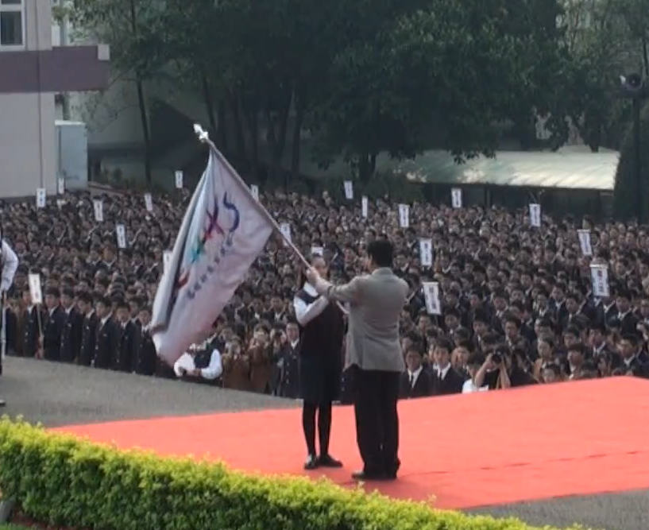

Our History
忠信管樂團成立於 2003 年 9 月，於 2012 年 3 月 29 日，忠信 43 週年校慶日正式宣誓授旗成軍，並由忠信學校前校長高天極老師親自授旗並正名為「忠信壯我管樂團」。
壯我管樂團是由一群熱愛管樂的同學所組成，團員來自全校各班，經甄選後加入樂團，樂團的中心思想是發揚忠信「樂觀奮鬥‧允執厥中」的校訓精神。
宣誓授旗之誓辭曰：
《西曆 2012 年，歲在壬辰，忠信四十二週歲之當日，忠信壯我軍樂團 55 名團員在此莊嚴宣誓：
從今天開始，我們的名字叫壯我；「江山霧裡」迴盪著我們的號角，「渡頭霜雪」印刻著我們的名字；我們永遠不辜負我們的名字，不或忘壯我的思想、壯我的精神、壯我的體魄。
我們今日是一個團體，我們永遠是一個團體，我們共同用音樂寫下忠信艱辛的歷史，用汗水譜出忠信美麗的樂章。》
授旗典禮專屬旗面設計

2012 年 3 月 29 日 宣誓授旗成軍大典